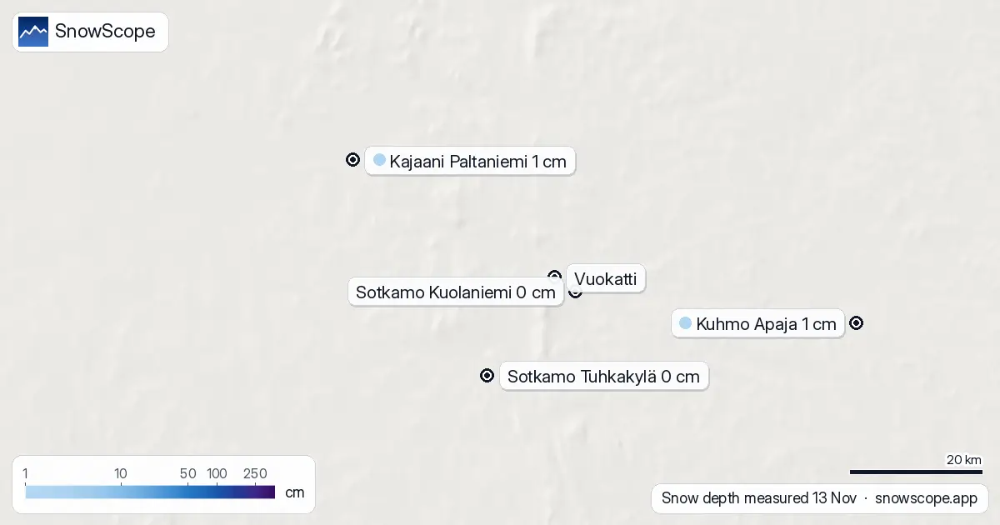

Snöläget i Vuokatti: ingen natursnö än, en blandad vecka framåt (14 november 2026)
Kajanaland har inte fått sin vinter än. På morgonen den 13 november mätte väderstationen Sotkamo Kuolaniemi, 4 km från backarna i Vuokatti på 160 m, 0 cm. Sotkamo Tuhkakylä, högre upp på 212 m, också 0 cm. Kajaani Paltaniemi och Ristijärvi hade 1 cm. Vår historik från 46 vintrar ger 9 cm som normalt snödjup här den 14 november, så backen ligger efter, men inte mycket.
Se snöprognosen för Vuokatinrinteet live i SnowScope-appenSnödjup, pudervarningar och 3D-kartan, gratis.
Barmark tills vidare
Stationerna i Sotkamo har visat 0 cm varje morgon den här månaden. Lite snö föll natten före den 13 november i Kajana och Ristijärvi, men inte tillräckligt för att täcka marken. Vi uppskattar nysnön de senaste sju dagarna till ungefär 5 cm, och det mesta smälte direkt när det kom.

En blandad vecka
Vi räknar med ungefär 9 cm de kommande sju dagarna, varav ungefär 6 cm det första dygnet. De andra prognoserna vi jämför med ligger mellan 10 och 33 cm på toppen av backen. Men den här gången är regnet en del av bilden: ungefär 38 % av nederbörden i dalen och 20 % på toppen kan komma som regn. Räkna med blöt snö som sätter sig snabbt snarare än ett djupt lager pudersnö.
Vad som är normalt
Vår historik ger ett normalt snödjup på 13 cm den 21 november, 17 cm den 30 november och 28 cm den 15 december. En normal vinter når max ungefär 73 cm och förblir vit i ungefär 187 dagar. Trenden pekar svagt nedåt: 196 snödagar per vinter under de första 15 vintrarna, 181 under de senaste 15.
När backarna öppnar
Enligt Vuokatinrinteets egen sida är målet att öppna den 4 december 2026, om väder och snö tillåter. Innan dess sker den första längdåkningen i Vuokatti på preparerad snö; en förstasnöslinga öppnade den 10 oktober i år.
Tips för skidåkare
- För skidåkning i november, leta efter spåren på preparerad snö snarare än natursnö i skogen.
- Blöt snö och regn på frusen mark gör gångvägar och parkeringar isiga på morgonen.
- Följ anläggningens egen backsida för den verkliga öppningen; datumet är ett mål.
Fler kartor (externa webbplatser)
Referenser och källor
- Meteorologiska institutet (Finland), öppna data (CC BY 4.0) en.ilmatieteenlaitos.fi/open-data
- Vuokatinrinteet, officiell sida: öppettider och liftstatus, läst 2026-11-13 vuokatti.fi/vuokatinrinteet/
Om siffrorna
Uppmätt snö: morgonavläsningar den 13 november 2026 vid de officiella väderstationerna i Sverige (SMHI öppna data), Finland (FMI öppna data, CC BY 4.0) och Norge (MET Norways stationsrapporter, CC BY 4.0, publicerade av Ogimet). Norges nationella snökarta seNorge (NVE och MET Norway, NLOD) ger uppskattningarna på ett rutnät om 1 km för backarna. Våra siffror: SnowScopes prognos för de kommande sju dagarna på tre höjder i skidområdet, jämförd med oberoende prognoser (ECMWF, ICON, GFS, GEM) för 14 till 20 november; snöhistorik för 46 tidigare vintrar (1980-81 till 2025-26), en modell av det förflutna korrigerad för höjd. Öppningsdatum: anläggningarnas egna sidor, lästa den 13 november 2026. Pistlängd och antal liftar: kartläggning i OpenSkiMap.
Officiella lavinprognoser: EAWS – European Avalanche Warning Services
Citera den här rapporten
För forskning, undervisning eller press: siffrorna och diagrammen får återanvändas fritt under CC BY 4.0 med den här källhänvisningen.
SnowScope (2026), Snöläget i Vuokatti: ingen natursnö än, en blandad vecka framåt (14 november 2026), https://snowscope.app/blog/sv/2026/11/vuokatti-snow-conditions-14-november-2026.html, hämtad 2026-11-14
SnowScope (Atlas Labs). (2026, November 14). Snöläget i Vuokatti: ingen natursnö än, en blandad vecka framåt (14 november 2026). SnowScope snow reports. https://snowscope.app/blog/sv/2026/11/vuokatti-snow-conditions-14-november-2026.html
BibTeX
@misc{snowscope2026vuokattisnowconditions14,
author = {{SnowScope (Atlas Labs)}},
title = {Snöläget i Vuokatti: ingen natursnö än, en blandad vecka framåt (14 november 2026)},
year = {2026},
month = nov,
howpublished = {\url{https://snowscope.app/blog/sv/2026/11/vuokatti-snow-conditions-14-november-2026.html}},
note = {Published 2026-11-14 20:29 UTC; accessed 2026-11-14}
}· CC BY 4.0 · Metoder, data och verktyg →
Vuokatinrinteet: snö och temperatur efter höjd, i vinter jämfört med förra (verktyg) →
Följ Vuokatinrinteet
Gratis: ett meddelande när nysnö är på väg, och prognosen varje morgon.
Fler snörapporter

Uppmätt snö runt Östersund den 13 november 2026: 19 cm på Norderön, 24 cm i Marby, 33 cm i Rissna. Tre till fyra gånger det vanliga snödjupet för datumet, med en kall och torr helg framför sig.

Uppmätt snödjup i Oslo den 13 november 2026: 4 cm på Blindern, 31 cm vid Bjørnholt och 37 cm på Tryvannshøgda. Hur en vanlig mitt i november ser ut och vad helgen gör med snön.

Hundägare i Oslo, 13 november 2026: 4 cm snö på Blindern, 31 cm vid Bjørnholt och 37 cm på Tryvannshøgda. Var hunden får springa lös, vad koppelreglerna säger i november och en kall, torr lördag.